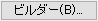
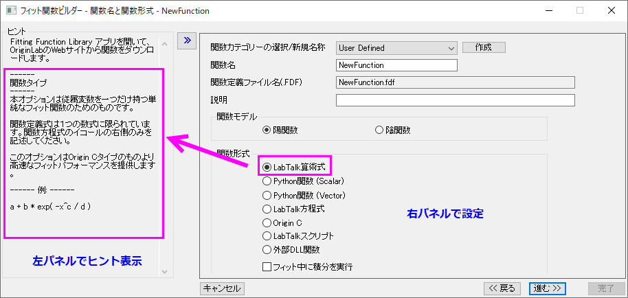

フィット関数ビルダー
フィット関数ビルダー
フィット関数ビルダーは、フィッティング関数を作成または編集する手順をガイドするわかりやすいウィザードを提供します。
それぞれのウィザードページには2つのパネルがあります。 左パネルは関連するヒントや例の情報を表示します。 右パネルはユーザ定義関数の編集オプションを表示します。 もしくは ボタンをクリックして左パネルの表示/非表示を切り替えられます。
ボタンをクリックして左パネルの表示/非表示を切り替えられます。
フィット関数ビルダーを開く方法:
- F8キーを押す
- Originのメインメニューでツールをクリックし、さらにフィット関数ビルダをクリックする
- フィット関数オーガナイザでビルダーボタンをクリックする
フィット関数オーガナイザでも関数を作成および編集できますが、ビルダーのほうがインタフェースがわかりやすいので簡単に関数を作成できます。フィット関数ビルダーを使用する場合、ウィザード内のすべてのページでオプションを設定することも、もしくはページをスキップしてデフォルトのままの設定にすることもできます。
- 
NOTE:
- ピークアナライザーで使うピーク関数を定義したい場合、そのピーク関数をPFWのカテゴリに置く必要があります。
- ピークアナライザで基線をフィットする（OriginPro専用）関数を定義するには、 基線 カテゴリーにユーザ定義関数を保存する必要があります。
- クイックピークガジェットや複数ピークフィットツールで使用できるピーク関数を定義したい場合には、Peak Functionsカテゴリにユーザ定義関数を移動させる必要があります。
- 非線形陰関数カーブフィットで使う陰関数のフィット関数を定義したい場合にはImplicitカテゴリにユーザ定義関数を置く必要があります。
- 2D曲面フィットで使う陰関数フィット関数を定義したい場合にはSurface Fittingカテゴリにユーザ定義関数を置く必要があります。
- 関数が上記のカテゴリで定義されていない場合は、ツール: フィット関数オーガナイザを開いてください。関数を上記のカテゴリに移動または共有することができます。
|